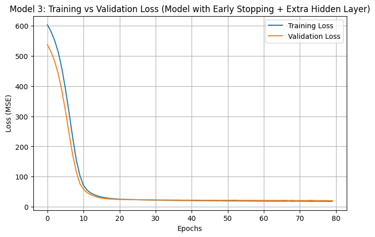
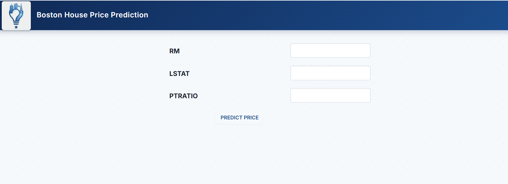

Midterm Hands-On Project (Improving Your Boston Housing Price Prediction Model)
Description: A collaborative optimization project focused on improving an existing Artificial Neural Network (ANN) used for real estate price prediction, concluding with a live web application deployment.
Objectives/Purpose:
- To identify and mitigate model overfitting observed in previous iterations.
- To implement and evaluate Early Stopping as a regularization technique.
- To expand the neural network's architecture by introducing an additional hidden layer.
- To deploy the final, optimized model to an Anvil web application for real-time inference.
Key Features
- Iterative Model Optimization: Conducted a controlled experiment across three distinct models (Baseline, Early Stopping, and Early Stopping + Extra Hidden Layer) to isolate the impact of each adjustment.
- Overfitting Mitigation: Successfully implemented an Early Stopping callback monitoring validation loss, preserving optimal network weights before memorization of the training set occurred.
- Cloud Deployment: Transitioned the model from a local notebook environment to a functional Anvil web application, processing live input features (RM, LSTAT, PTRATIO) into actionable dollar values.
Important Code Blocks
1. Early Stopping Implementation
This callback halts training if the validation loss fails to improve after 15 epochs, forcing the network to restore the weights from its most generalized state.
from tensorflow.keras.callbacks import EarlyStopping
early_stop = EarlyStopping(
monitor='val_loss',
patience=15,
restore_best_weights=True
)2. Expanding the Network Architecture
For Model 3, an additional dense hidden layer (32 neurons) was added to increase the network's capacity to map complex, non-linear real estate market patterns.
# Model with Early Stopping + Additional Hidden Layer
model_3 = Sequential([
Dense(128, activation='relu', input_shape=(X_train.shape[1],)),
Dense(64, activation='relu'),
Dense(32, activation='relu'), # Newly added hidden layer
Dense(1, activation='linear')
])
model_3.fit(X_train, y_train, validation_split=0.2, epochs=300, callbacks=[early_stop])Screenshots & Results


Observations:
- Early Stopping: Addressed severe overfitting by halting training when the model stopped generalizing, prioritizing real-world accuracy over raw training metrics.
- Architecture: The extra hidden layer, kept in check by Early Stopping, achieved the optimal structural balance and improved the overall Mean Absolute Error (MAE).
Tools & Technologies
- Languages: Python 3
- Libraries/Frameworks: TensorFlow/Keras (Sequential API, EarlyStopping), Pandas, Scikit-Learn
- Platforms: Google Colab, Anvil.works (Web App Deployment)
Challenges & Solutions
Problems Encountered: The baseline model produced excellent metrics on the training data but performed poorly on unseen data, an indicator of severe overfitting. Furthermore, the simple architecture was struggling to capture the extreme variance in property values driven by factors like low demographic status (LSTAT).
How I Solved Them: I integrated an Early Stopping callback to automatically cut off the training loop once validation loss plateaued. To fix the capacity issue, I added a third hidden layer, ensuring the model was deep enough to process complex interactions between rooms (RM) and neighborhood status before passing it to the linear output layer.
Learning Reflection
What I Learned: I learned that raw training performance can be deceptive and that visual loss curves are critical for diagnosing overfitting. Additionally, I bridged the gap between model training and model deployment, understanding how a trained Keras model interacts with a web framework.
Skills Gained: Applying deep learning regularization techniques, evaluating comparative ML models, and deploying machine learning models to cloud-based web applications via Anvil uplinks.